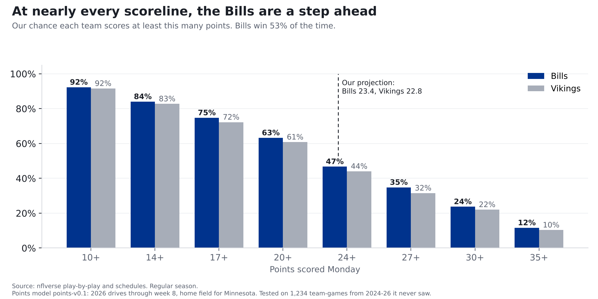
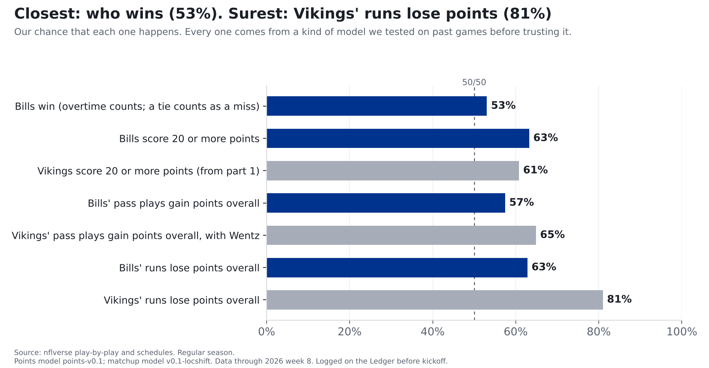
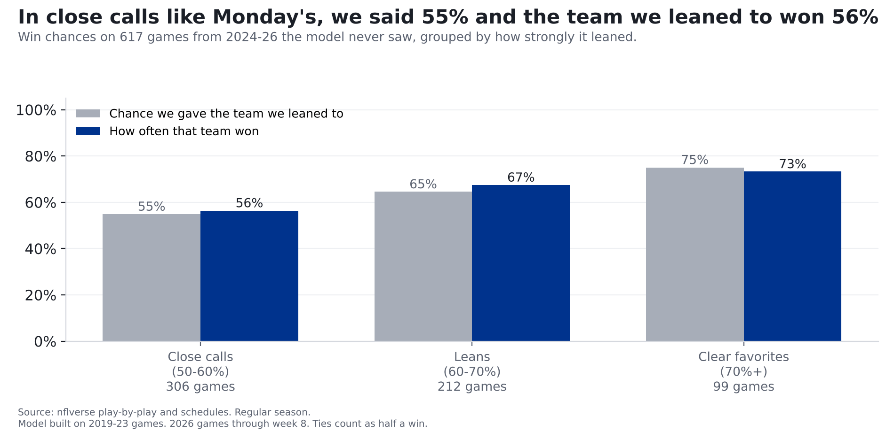

Bills at Vikings: our prediction for Monday night
As close as games get: our model projects Bills 23.4, Vikings 22.8. That small Buffalo edge shows up at nearly every scoreline and gives the Bills a 53% chance to win.
Finding: Pick almost any score, and the Bills are a little more likely than the Vikings to get there: 75% to 72% to reach 17 points, 47% to 44% to reach 24. It's never a big edge, but it's there nearly everywhere, and the same edge gives the Bills a 53% chance to win. It all traces to one small gap: we project Buffalo 23.4 points, Minnesota 22.8.
Bills at Vikings, Monday Night Football, Nov. 9, 8:15 p.m. ET, U.S. Bank Stadium (indoors). Part 3 of our week 9 preview. Part 1 covered Carson Wentz against the Bills defense; part 2 covered Josh Allen against Minnesota's defense. Numbers are 2026 through week 8.

The scoreboard ladder
Picture a ladder of scorelines: 10 points, 14, 17, 20 and up. For each rung, here's our chance that each team climbs at least that high Monday:
| Points | Bills | Vikings |
|---|---|---|
| 10 or more | 92% | 92% |
| 14 or more | 84% | 83% |
| 17 or more | 75% | 72% |
| 20 or more | 63% | 61% |
| 24 or more | 47% | 44% |
| 27 or more | 35% | 32% |
| 30 or more | 24% | 22% |
| 35 or more | 12% | 10% |
Read it like this: there's a 75% chance the Bills score 17 or more, and a 72% chance the Vikings do. The Bills are ahead by 1 to 3 percentage points on every rung except 10 points, where the edge is under one point (92% each, rounded). That's this game in one table: no big edge anywhere, a small one almost everywhere.
How a 23-point game becomes 53%
Nobody scores exactly what we project. So we looked at 2,494 past team scores from 2019-2023 and asked how far off we were. Half the time, a team landed within about 6 points of our number. Eight times in ten, within about 12. (Those are the games the model was built on; on games it had never seen, its average miss was 7.5 points.)
Then we play Monday's game over and over, once for every one of those past misses, on top of today's projections. In some replays the Bills score a lot; in others they're held down. Eight times in ten they land between 12 and 36. Count how often the Bills reach 20 or more in all those replays and you get 63%. Count 24 or more and it's 47%, just under half, because 23.4 is right in the middle. That's what our 23.4 really is: the middle of a wide range, not a guess at the final score. And it's why a 0.6-point edge only gets the Bills to 53%. When a typical miss is 6 points either way, 0.6 is a nudge, not a shove.
Who wins? Same idea, both teams at once. We took 1,247 real past games and noted how far off we were for each team in that same game. Then we applied each pair of misses to Monday's projections and checked who came out ahead. Buffalo did in 53% of them. (A game tied after 60 minutes counts as half for each side, since overtime is close to a coin flip.)
So why not call it a tie? Because the model doesn't: 23.4 beats 22.8, and that's what tips it to 53%. Both projections are written into our Ledger entries before kickoff.
The calls going on the Ledger
| Call | Our chance | Where it comes from |
|---|---|---|
| Bills win (overtime counts; a tie counts as a miss) | 53% | Points model, win chance |
| Bills score 20 or more points | 63% | Points model |
| Vikings score 20 or more points (from part 1) | 61% | Points model |
| Bills' pass plays gain points overall | 57% | Matchup model |
| Vikings' pass plays gain points overall, with Wentz | 65% | Matchup model |
| Bills' runs lose points overall | 63% | Matchup model |
| Vikings' runs lose points overall | 81% | Matchup model |

What "gain points" and "lose points" mean: these aren't scoreboard points. Every play moves a drive closer to scoring or further away, and we add that up over the night. A team's runs "lose points" if, all told, its running plays left it worse off than before. That's normal: in the 990 past team games we tested on (2023-2025), a team's runs lost points overall 64% of the time. So 63% for the Bills is about the usual rate, a shade better; the Vikings' 81% is well above it.
These are our model's numbers. They count once they're logged on the Ledger before kickoff; every logged call is graded after the game, hit or miss.
Where the 23 comes from: the NFL's best offense meets its best defense, and they cancel out
The most interesting matchup of the night, the best offense against the best defense, mostly cancels itself out. Part 2 found that's usually what happens: when a top-3 offense meets a top-3 defense, the result lands close to adding the two together.
Points come from drives, so that's where we start. Four steps:
- How good is each side? This season the Bills average 3.08 points per drive, the most in the NFL (1st of 32). Minnesota's defense gives up just 1.20 per drive, the fewest. An average offense scores 2.07 per drive.
- Don't overreact to seven games. A hot start isn't a guarantee, so we mix in last season and an average team. That makes the Bills' offense 2.83 and the Vikings' defense 1.45: still far better than average, just less extreme.
- Let them meet. The Bills' offense is 0.75 points per drive better than average. Minnesota's defense is 0.62 better than average. Those almost cancel out, leaving about 2.21 points per drive: a bit better than an average offense, which would rank about 11th of 32 this season.
- Count the drives and check against history. About 11 drives a game gets you to about 24. A final check against past games pulls extreme projections back toward normal and gives the home team about 1.5 points. Buffalo is on the road, so it lands at 23.4.
Minnesota goes through the same four steps from the other direction: a below-average offense (1.78 per drive) against a below-average Bills defense (2.23 allowed), plus the home bump. That's 22.8.
Did we check it? Yes, before trusting it
The scoreline chances. We ran the model on 1,234 team games from 2024-2026 that it had never seen. At the extremes it was right on: when it gave a team a 20% chance or less, it said 12% on average and it happened 12%; at 80% or more, it said 89% and it happened 89%. In the middle it ran a few points low, including right at the 20-point line (it said 60%, teams got there 65%). Real scores bunch up on 17, 20 and 24, and our model smooths that out. So both teams' 20-or-more chances are probably a few points low. We're logging them as they are and will fix this before using these lines again.
The win chance. On 617 unseen games (week 2 on, 2024-2026), the team our model leaned to won 63% of the time. Taking the home team every time would have been right 52% of the time.

The chart counts a tied game as half a win; the 63% above counts it as a miss.
The pass and run calls. These come from a simpler model, tested on 990 past team games (2023-2025) against just guessing the league's usual rate. It beat the guess on pass calls and edged it on run calls. On one kind of call it lost, so we threw that call out.
The call we threw out. We were going to say there was a 66% chance the Bills sack Wentz on more than 6% of his dropbacks. But when this kind of call was confident, it said 64% and was right 54% of the time: worse than just guessing the usual rate. Sacks in one game swing too much to call, so we're not.
What the model doesn't know
- Wentz. The points model doesn't know Minnesota switched quarterbacks; its numbers come mostly from Kyler Murray's games and last season's. The Vikings' pass call does use Wentz's own numbers (243 dropbacks over 2025 and 2026), but that swap is the one piece we haven't tested.
- Injuries. Both Bills starting tackles were on this week's injury report (ClutchPoints, Nov. 5). Our models don't know who plays.
- One game is one game. 53% means the Bills lose this about half the time. One call proves nothing; a season of graded calls does. That's why everything goes on the Ledger.
For the stat-heads
- Matchup-call backtest grades (Brier score, lower is better), 990 team games per call type: pass plays gain points 0.230 vs 0.245 for the league rate (calibrated in the range of Monday's calls); runs 0.226 vs 0.231; sacks on 6%+ of dropbacks 0.254 vs 0.252 (dropped).
- Run-model caution: above 55% that runs gain points it said 61% and it happened 46% (n=52). Monday's run calls sit in buckets where it said 24% / 38% and it happened 26% / 37%.
- Points model points-v0.1 (
src/ledger/points_model.py): ratings = (points + 60 x prior) / (drives + 60), prior = league + 0.7 x last season's gap; raw = (league + off gap + def gap) x average pace; calibrated score = 7.07 + 0.679 x raw + 1.45 x home, fit on 2019-23 (week 2 on). Ladder chances = share of the 2,494 empirical training residuals that put the projection at or above each line. Ladder calibration out of sample, all 8 lines pooled: said 12% / happened 12% (n=1,800); said 30% / happened 34% (n=2,073); said 50% / happened 55% (n=1,704); said 70% / happened 74% (n=2,017); said 89% / happened 89% (n=2,278). - Win chance (points-win-v0.1): 1,247 same-game (home miss, away miss) residual pairs from training, added to Monday's two projections; margins within half a point split 50/50. Residual correlation 0.035. Out of sample (2024-26, week 2 on, n=617): Brier 0.2263 vs 0.2492 (50/50) and 0.2486 (training home-win rate 0.534). The "grade" in the story is the Brier score: the average squared gap between the chance we gave and what happened (1 or 0); tied test games count as 0.5 there and in the chart, and as misses in "the team it favored won".
- Matchup model v0.1-locshift (
src/ledger/model_v01.py): expected = league + 0.5 x (offense gap + defense gap), plus the pooled within-team game-to-game spread; P = share of that spread above the threshold. EPA per dropback (with scrambles and sacks), EPA per designed rush. Bills dropback EPA expected +0.031 (offense +0.309, Vikings defense -0.247, league +0.056); Vikings dropback +0.072 with Wentz's relative value; rush: Bills -0.057, Vikings -0.154. - Matchup backtest:
scripts/backtest_model_v01.py, 2023-25 weeks 8+, n=990 per call type, baseline = league share over the threshold in prior weeks of that season. Sack rate > 6%: Brier 0.2536 vs 0.2516. - Data pinned through 2026 week 8. No betting lines are used anywhere in these models.